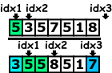
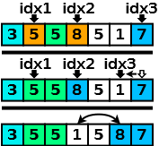
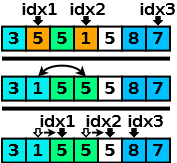
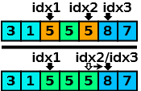

 W trakcie działania programu twoja funkcja powinna utrzymywać tablicę podzieloną na cztery części: 1. Na początku powinny znajdować się elementy mniejsze od „wartości osiowej” - nazwijmy ten fragment „A”. 2. Następnie powinny znajdować się elementy równe „wartości osiowej” - fragment „B” 3. Trzeci fragment tablicy powinny wypełniać liczb dotychczas nieporównane – fragment „C” 4. Na końcu powinny znajdować się liczby większe od „wartości osiowej” - fragment „D”.
Dodatkowo twoja funkcja powinna pamiętać trzy znaczniki: „idxB” – początek fragmentu „B” i jednocześnie koniec fragmentu „A”. „idxC” - początek fragmentu „C” i jednocześnie koniec fragmentu „B”. „idxD” - początek fragmentu „D” i jednocześnie koniec fragmentu „C”.
Twoja funkcja powinna działać w pętli. Dla każdego wywołania pętli funkcja powinna brać pierwszy nieporównany element (pierwszy element fragmentu „C”) i porównywać go z „wartością osiową” (pierwszym elementem fragmentu „B”).
 Jeśli element jest większy od „wartości osiowej”. Funkcja powinna przesunąć wstecz znacznik „idxD”, a następnie zamienić element porównany z elementem znajdującym się na miejscu określonym znacznikiem „idxD”.
 Jeśli element jest mniejszy od „wartości osiowej”. Funkcja powinna zamienić ten element z pierwszym elementem fragmentu „B”, a następnie zaktualizować znaczniki: „idxB”, „idxC”.
 Jeśli element jest równy „wartości osiowej”. Funkcja powinna jedynie przesunąć znacznik „idxC”.
Pętla w funkcji „podziel” powinna skończyć swoje działanie, jeśli nie będzie żadnego elementu nieporównanego (jeśli fragment „C” będzie pusty).
| Dane: | Liczba naturalna n i ciąg liczb x0, x1,..., xn-1 |
| Wynik: |
Ciąg x'0, x'1,..., x'n-1,
który powstał z przestawienia elementów ogrinalnego ciągu.
Ciąg jest podzielony na trzy części zgodnie zgodnie z treścią zadania. Ponadto funkcja powinna zwrócić dwa indeksy idx1 oraz idx2 takie, że: x'i < x0 dla każdego i < idx1 x'i = x0 dla każdego i ≥ idx1 oraz i < idx2 x'i ≥ x0 dla każdego i ≥ idx2 |
| Krok 1. | Przyjmij za idx1 := 0, przyjmij za idx2 := 1, przyjmij za idx3 := n |
| Krok 2. |
Dopóki idx2 < idx3 wykonuj:
jeśli xidx2 < xidx1 wykonaj:
zamień xidx1 oraz xidx2,
zwiększ idx1 oraz idx2, kontunuuj działanie pętli.
jeśli xi = x0 wykonaj:
zwiększ idx2 oraz kontunuuj działanie pętli.
jeśli xi > x0 wykonaj:
zmniejsz idx3,
zamień xidx2 oraz xidx3.
|